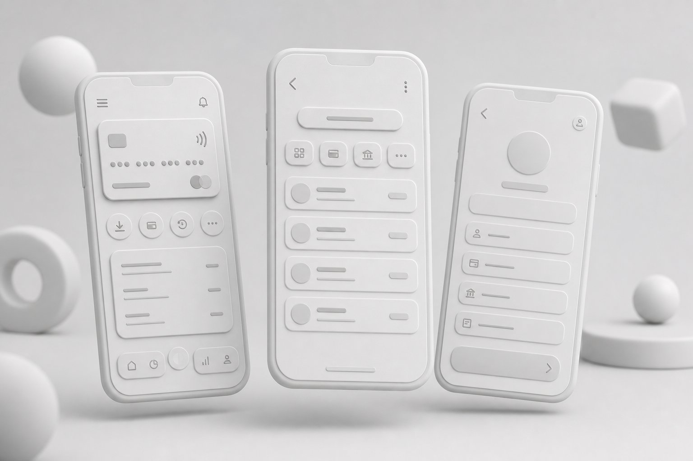
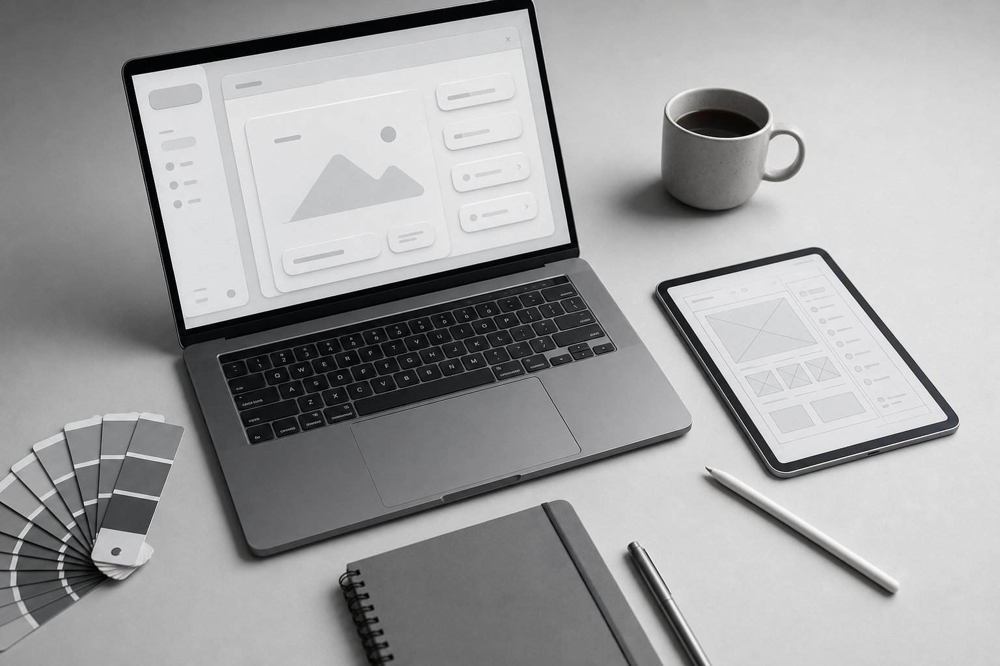
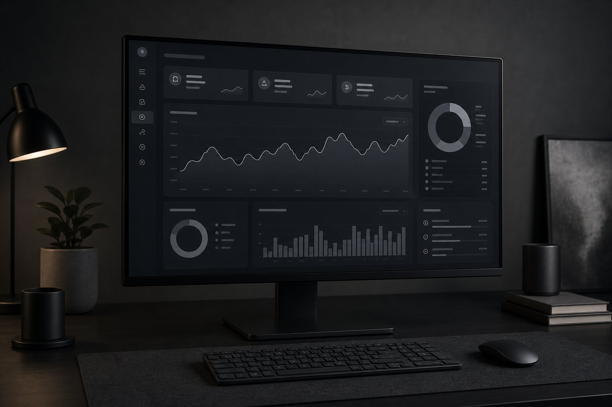
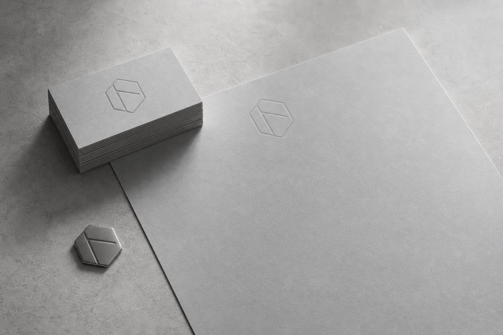
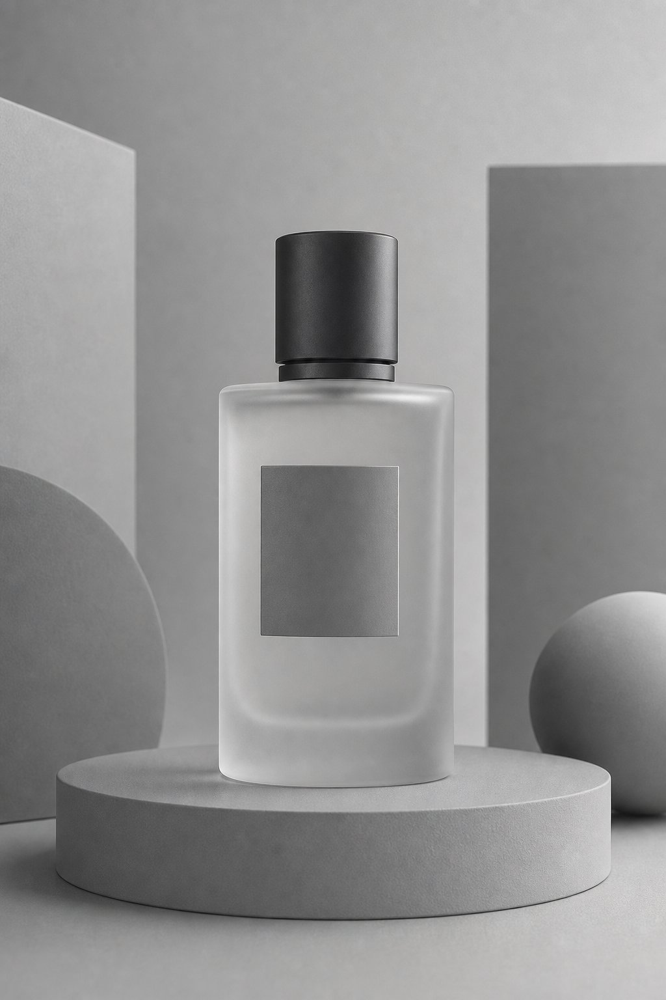

Pulse Bank
Yumshoq neyumorfik elementlarga ega mobil banking ilovasi — kartalar, o'tkazmalar, statistika.
G'oyalarga yumshoq forma beraman. Foydalanuvchi uchun qulay, ko'zga yoqimli va zamonaviy raqamli mahsulotlar yarataman — och ko'kdan to'q ko'kkacha bo'lgan ohanglarda.
Minimalizm, aniqlik va yumshoqlik — uch ustun, bitta maqsad: qulay mahsulot.

8 yildan beri veb va mobil mahsulotlar uchun interfeys yarataman. Soft UI (neyumorfizm) uslubida ishlayman: elementlar fonda erib ketmaydi, aksincha — yumshoq soyalar orqali "jonli" tuyuladi.
Har bir loyihani tadqiqotdan boshlayman: foydalanuvchi kim, muammosi nima va dizayn uni qanday yechadi. Keyin — toza kompozitsiya, och ko'k va to'q ko'k ohanglar hamda puxta mikro-interaksiyalar.
Asosiy yo'nalishlarim va ular bo'yicha tajriba darajam.
Soft UI prinsipi: interfeys bosimni emas, yengillikni his ettirsin.
Tanlangan loyihalar — mobil ilovalardan brend identifikatorigacha.

Yumshoq neyumorfik elementlarga ega mobil banking ilovasi — kartalar, o'tkazmalar, statistika.

Tun rejimidagi analitika paneli: och kulrang grafiklar va to'q kulrang sirtlar uyg'unligi.

Minimal logotip, rang palitrasi va bosma materiallar — to'liq brend kitobi.

Parfyumeriya uchun premium qadoq dizayni — 3D render va material tanlovi.
Responsive e-commerce platformasi: yumshoq kartalar, oson checkout jarayoni.
G'oyadan maketgacha: tadqiqot, wireframe, rang sinovlari va yakuniy dizayn.
G'oyadan tayyor mahsulotgacha — to'liq tsikl bo'yicha yordam beraman.
Veb va mobil ilovalar uchun toza, intuitiv va zamonaviy interfeyslar.
Logotip, rang palitrasi, shriftlar va to'liq brend kitobi.
Figma'da interaktiv prototiplar va foydalanuvchi testlari.
Komponentlar kutubxonasi, tokenlar va jamoa uchun hujjatlashuv.
Birga ishlagan odamlar nima deydi?
Aziz bilan ishlash oson: muddatlar hurmat qilinadi, natija kutilganidan yuqori. Ilovamiz App Store'da 4.9 baho oldi.
Soft UI uslubidagi dashboard foydalanuvchilarimizga juda yoqdi — sessiya davomiyligi 35% ga oshdi.
Brendimiz yangi qiyofada: qadoqlar premium ko'rinadi, savdo bir chorakda 40% ga o'sdi.
Loyihangiz bormi? Bir stakan kofe ustida muhokama qilamiz.